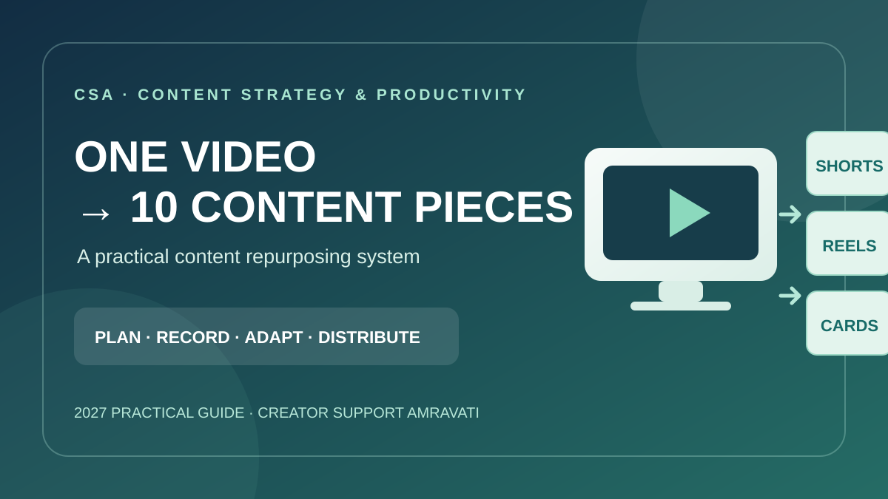
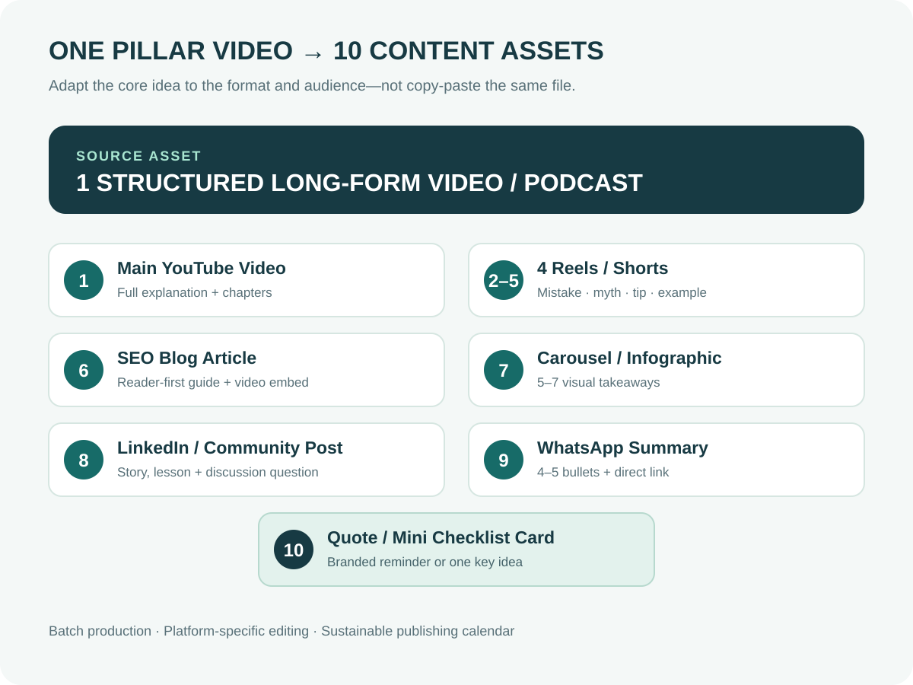

Ek Video Se 10 Content Pieces Kaise Banayein? Complete Content Repurposing System (2027 Guide)
Creators, educators aur business owners ke paas ideas ki kami nahi hoti—lekin har platform ke liye alag se shoot, edit aur publish karna time-consuming ho sakta hai. Content repurposing ek practical approach hai: ek useful, well-planned pillar video ko alag audience needs aur platform formats ke hisaab se multiple assets mein badalna. Iska goal har jagah same file chipkana nahi, balki ek core idea ko naye context ke saath useful banana hai.

- Content repurposing kya hai aur kab useful hota hai
- Ek pillar video se 10 content pieces banane ka system
- Platform-wise adaptation aur publishing workflow
- Random posting aur structured repurposing ka comparison
- 4 common mistakes aur practical FAQs
1. Content Repurposing Kyun Zaroori Hai?
Ek hi topic ko audience alag-alag tareeke se consume karti hai. Kuch viewers detailed YouTube explanation dekhna chahte hain, kuch quick vertical clip, aur kuch step-by-step written guide. Repurposing aapko core research aur recording ka better use karne mein help karta hai.
- Different learning preferences: Long-form video, short clips, written article aur infographic ek hi idea ko different ways mein explain karte hain.
- Consistent brand touchpoints: Relevant formats mein useful message share karne se audience ko aapka work multiple places par discover ho sakta hai. Reach ya engagement automatically multiply hone ki guarantee nahi hoti.
- More efficient production: Ek planned shoot se multiple deliverables ban sakte hain, jisse har baar camera, mic aur lights dobara set karne ki zaroorat kam ho sakti hai.
2. Ek Pillar Video Se 10 Content Pieces Kaise Nikalein?
Maan lijiye aapne apne niche ke kisi important topic par 12–20 minute ka structured YouTube video ya podcast episode record kiya hai. Neeche diye gaye 10 outputs ko ek hi din publish karna zaroori nahi; inhe planned calendar mein spread kiya ja sakta hai.
Piece 1: Main Long-Form YouTube Video (Authority & Watch Time)
Apna complete explanation YouTube par publish karein. Topic ko logical chapters mein divide karein, title ko clear rakhein, useful description likhein aur accurate, readable thumbnail banayein. Audio clarity aur opening ke first moments par special attention dein.
Pieces 2–5: Four Reels / YouTube Shorts (Discovery & Reach)
Video se chaar standalone moments choose karein. Har clip mein viewer ko bina poora original episode dekhe bhi ek useful point samajh aana chahiye.
- Common mistake + solution: Ek frequent problem aur uska actionable fix.
- Fact, myth ya framework: Ek misconception clear karein ya simple model explain karein.
- Quick practical tip: Ek aisa step jo viewer turant try kar sake.
- Example ya mini case: Ek relevant demonstration, before/after ya short story.
In clips ko 9:16 vertical frame mein edit karein, opening ko self-contained banayein, captions readable rakhein aur important text ko platform interface ke safe areas se door rakhein. Clean master export se platform-specific versions banayein; har platform par current upload specifications check karein.
Piece 6: One Detailed SEO Blog Article (Search & Reference)
Video ke main points ko reader-first article mein badlein. Spoken transcript ko seedha paste karne ke bajay introduction, clear headings, examples, steps, comparison table aur relevant FAQs add karein. Jahan useful ho, original video embed karein aur reader ko dono formats mein choose karne dein.
Article mein wahi claims rakhein jo aap verify kar sakte hain. Video se alag extra explanation, screenshots ya practical examples add karna article ko genuinely useful banata hai. Repurposed hona apne aap mein search ranking ya indexing ki guarantee nahi hai.
Piece 7: One Visual Carousel / Infographic (Saves & Shares)
Video ke 5–7 key takeaways ko clean slides mein arrange karein. Ek slide par ek main idea rakhein, text ko short rakhein aur final slide par next step ya useful question dein. Instagram aur LinkedIn ke layout aur audience expectation ke hisaab se design adapt karein.
Piece 8: One LinkedIn / Community Text Breakdown (Discussion)
Video ke central lesson ko short story, problem-solution breakdown ya numbered insights ke roop mein likhein. Apna perspective ya practical observation add karein. End mein ek relevant discussion question poochhein—sirf link drop karna zaroori nahi.
Piece 9: One WhatsApp Channel / Broadcast Summary (Audience Retention)
Apni opted-in audience ke liye 4–5 bullet points ka useful summary aur original video link share karein. Message ko relevant rakhein, frequency ka dhyan rakhein aur unsolicited bulk messaging se bachein.
Piece 10: One Quotable Graphic / Mini Checklist Card (Brand Recall)
Video ki ek memorable line, short framework ya actionable checklist ko branded graphic mein badlein. Graphic ko itna clear rakhein ki viewer ko context samajhne ke liye caption par depend na rehna pade.

3. Random Daily Posting vs. 1-to-10 Repurposing System
| Aspect | Random Daily Posting | Structured Repurposing System |
|---|---|---|
| Shoot Effort | Har post ke liye naya idea aur setup dhoondhna pad sakta hai | Planned pillar shoot se multiple outputs prepare kiye ja sakte hain |
| Content Depth | Jaldi publish karne ke chakkar mein context kam reh sakta hai | Ek topic ko detail mein explain karke useful excerpts nikalte hain |
| Platform Fit | Same raw clip ko har jagah use karne ka risk | Format, hook, pacing, caption aur layout adapt kiye jaate hain |
| Consistency | Daily idea pressure se schedule break ho sakta hai | Batching aur calendar se sustainable schedule plan ho sakta hai |
4. Simple Weekly Repurposing Workflow
- Plan: Audience ka ek real question choose karein aur 3–5 sub-points outline karein.
- Record: Ek clean pillar video shoot karein. Audio, lighting aur framing pehle test karein.
- Mark moments: Editing ke dauran timestamps note karein—mistake, tip, example, framework aur quote.
- Batch edit: Ek clean master, vertical clips, still frames aur captions prepare karein.
- Write and design: Blog ko reader-first banayein; carousel aur text post mein extra context add karein.
- Schedule and learn: Publishing calendar follow karein aur platform-wise audience response ko compare karein.
5. Content Repurpose Karte Waqt 4 Galtiyan Na Karein
- Bina context ke clip kaat dena: Short video mein subject aur point jaldi samajh aana chahiye. Zaroorat ho toh short setup line ya on-screen context add karein.
- Watermark ya mismatched export: Clean source export se platform-specific files banayein. Resolution, aspect ratio, captions aur branding ko upload se pehle check karein.
- Horizontal ko bina reframing vertical kar dena: 16:9 footage ko 9:16 banate waqt face, product aur on-screen text ko frame mein rakhein; captions safe zones mein hon.
- Transcript ko blog samajh lena: Article ko reader ke liye rewrite karein. Headings, examples, original explanation aur useful links add karein; transcript ko bina editing publish na karein.
6. Performance Ko Kaise Measure Karein?
Har asset ka objective alag ho sakta hai, isliye sirf views ko success ka single measure na banayein.
- Long-form video: Click-through rate, average view duration, audience retention aur meaningful comments.
- Short clips: Viewed vs. swiped-away signals (where available), average watch time, completion/rewatch patterns aur profile visits.
- Blog: Search impressions, clicks, engaged sessions aur reader actions.
- Carousel / text: Saves, shares, comments aur relevant profile visits.
- WhatsApp: Link clicks aur audience replies—respecting consent and privacy.
Aksar Puche Jaane Wale Sawal (FAQs)
1. Kya ek hi topic ko alag-alag formats mein dalne se audience bore nahi hoti?
Zaroori nahi. Har format ko alag purpose dein—short clip mein ek quick lesson, blog mein detail, carousel mein visual summary. Agar har jagah same content bina adaptation ke repeat hoga toh audience fatigue ho sakti hai. Feedback aur performance dekhein.
2. Repurposing ke liye pillar video ki ideal length kya honi chahiye?
Koi universal ideal length nahi. 10–25 minute ka focused video ek possible starting range hai, lekin topic ki complexity, audience expectation aur aapke delivery style ke hisaab se duration choose karein.
3. Kya ek solo creator yeh poora system khud chala sakta hai?
Haan, lekin shuruaat mein sabhi 10 assets banana zaroori nahi. Ek long video, 2–3 short clips aur ek useful article se start karein. Templates aur batching se workflow manageable ho toh dheere-dheere expand karein.
4. Kya repurposed blog posts ko Google AdSense approval aur search ranking milti hai?
Repurposing se approval, indexing ya ranking guarantee nahi hoti. Article ko reader ke liye original value, accurate information, meaningful examples aur clear editorial work dena chahiye. AdSense approval Google ki review aur site-wide policies par depend karta hai.
Useful Tools & Resources
- Creator Packaging Kit: Pillar video aur short clips ke titles, descriptions aur captions ke liye Creator Packaging Kit dekhein.
- Editing, Thumbnails & Repurposing Services: Multiple Reels, Shorts, thumbnails aur edited videos ke liye CSA Services dekhein.
- Content Workflow Consultation: Apne channel ya brand ke liye custom workflow discuss karne ke liye Creator Support Amravati se sampark karein.
Suggested & Related Articles
- 2027 Ke Liye Indian Creators Aur Businesses Ka Complete Growth Blueprint — retention, packaging aur multi-platform growth.
- Podcast Studio Setup: Ghar Ya Chhote Studio Mein Clean Audio Aur Video — reliable pillar video production ke liye recording setup.
- YouTube Thumbnail CTR Kaise Badhayein? — long-form video packaging aur thumbnail design.
- YouTube Video Editing Workflow Guide — footage se final publish-ready edit tak.
Helpful Official Guidelines & References
- YouTube Help Center — video publishing, Shorts aur analytics resources.
- Google Search Central: Creating Helpful, Reliable, People-First Content.
About the Author
Rajkumar Chavhan ek digital marketing specialist (8+ years experience) aur Creator Support Amravati (CSA) ke founder hain. Woh content strategy, video aur Reels editing, thumbnail aur graphic design, SEO aur web development ke zariye creators, educators aur businesses ko unki digital presence grow karne mein madad karte hain.
- Website: creatorsupportamravati.in
- Studio & Office: Vyanktesh Complex, Shop No. F-101, Mahendra Colony, Naredi Nagar Road, Amravati, Maharashtra 444604
Editorial Disclosure: Yeh guide educational aur informational purpose ke liye hai. Content performance platform, audience, topic aur execution ke hisaab se vary karta hai; reach, leads ya ranking ki guarantee nahi di jaati. Editing aur production support ke liye aap Creator Support Amravati se jud sakte hain.